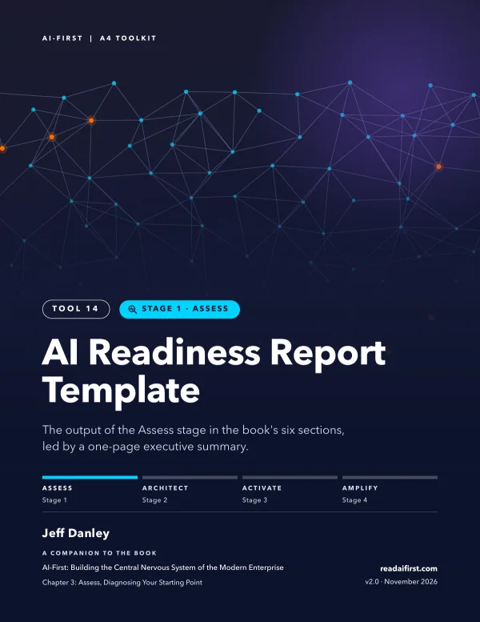
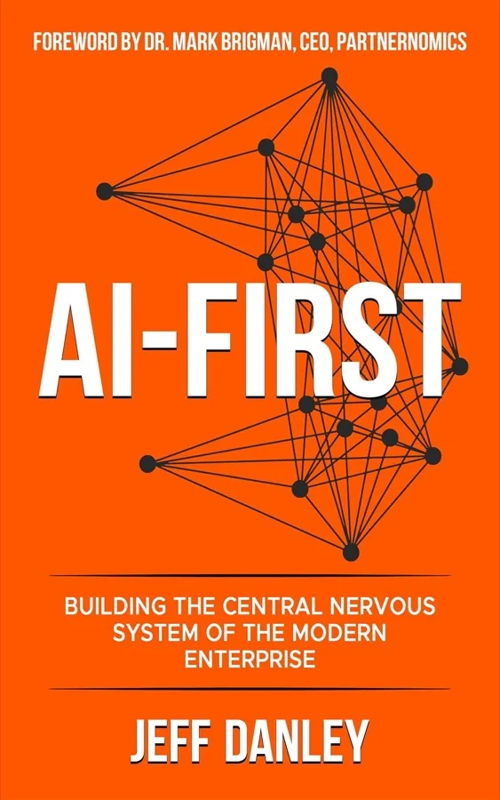
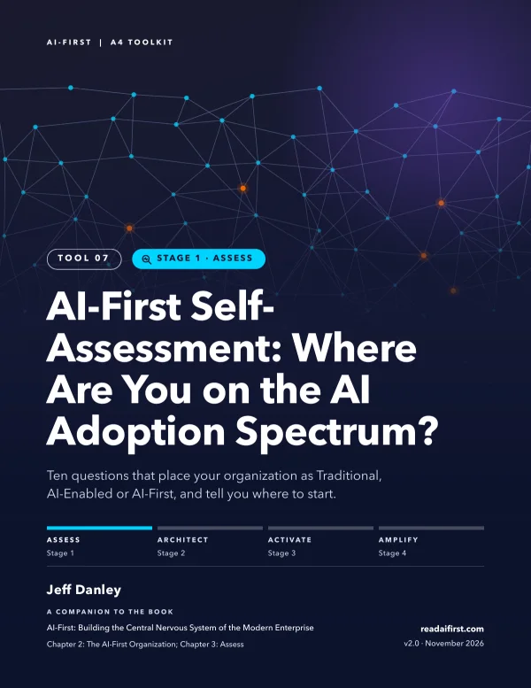
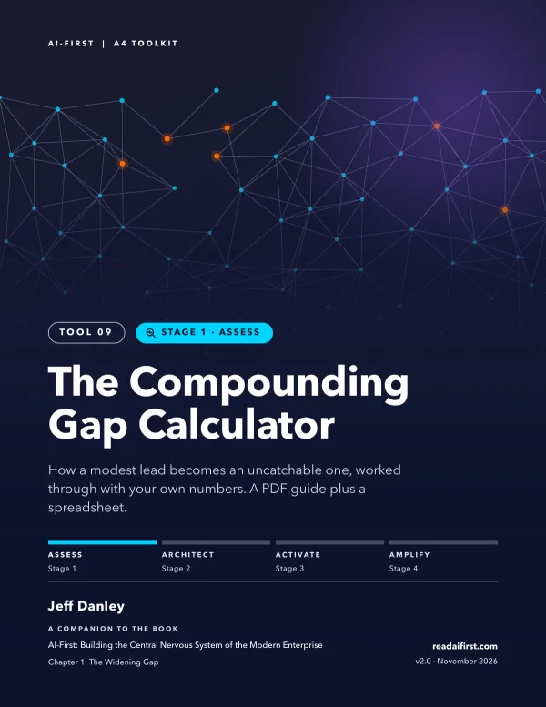
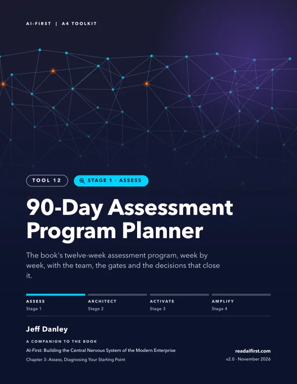
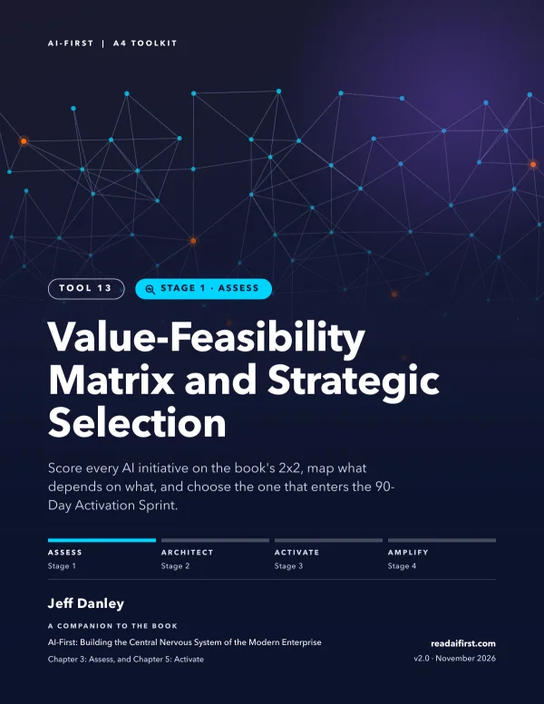

Tool 14 · AI Readiness Report Template
The Assess stage output in the book’s six sections, led by a one-page executive summary.
10 pages, PDF
Two to three months of honest diagnosis that ends with your AI Readiness Report and a short list of where to start.
Most leadership teams can name their AI pilots. Far fewer can say which of them the company is ready to scale, and that’s the question Assess answers.
You score the organization on the book’s Four Foundations of AI Readiness (data, talent and skills, process maturity and cultural readiness), look at every initiative on the table, and choose the one worth a 90-day sprint.
The book runs Assess as a 90-day program with an assessment team of eight to ten people, skeptics included, because skeptics ask the questions enthusiasts skip.
The first month sets the baseline, the second goes deep on talent, process and culture, and the third turns the findings into scores, a ranked portfolio and a roadmap.
“Assessment without commitment to action is theater.”
AI-First, Chapter 3

The chapter walks through each foundation and the conditions that weaken it, from the Silo Syndrome in data to the Trust Deficit in culture, then sets out the 90-Day Assessment Program week by week. Its case is Kyndryl, whose data governance team started with 400 retention rules written in legal language and cut them to 93 by understanding the processes first (Iron Mountain case study, March 2025, vendor-published).
Your destination. Fund the foundation work first.
Pursue immediately. They build momentum and fund larger efforts.
Kill these conversations early.
Only if resources allow.
The book gives the report six sections: an executive summary, the foundation assessments, heat maps and scoring, the initiative portfolio, a transformation roadmap and governance recommendations. My advice is to write the first page so a board member can read it in five minutes and know what you’re being asked to fund. Tool 14 gives you the template.

The Assess stage output in the book’s six sections, led by a one-page executive summary.

Ten questions that place your organization as Traditional, AI-Enabled or AI-First.

Find out which of Chapter 1’s three traps has a grip on your AI program, and the way out of each.

How a modest lead becomes an uncatchable one, worked through with your own numbers. PDF guide plus spreadsheet.

Score the five characteristics of AI-first organizations and find the one that holds the rest back.

The book’s twenty readiness questions across data, talent, process and culture, scored 0 to 100 per foundation.

The book’s twelve-week assessment program, week by week, with the team, the gates and the closing decisions.

Score every AI initiative on the book’s 2x2, map what depends on what, and choose the one for the sprint.
The Assess stage output in the book’s six sections, led by a one-page executive summary.
One email unlocks all 34 tools. You’ll also get AI-First Leaders Weekly every Tuesday, and you can leave anytime.
The book plans it as a 90-day program, and most teams need two to three months. Tool 07 gives you a first read in an afternoon if you want one before committing.
An assessment lead with a team of eight to ten people who bring technical skill, business understanding and credibility across the company. The CEO, or another executive with real authority, sponsors it and owns the decisions at the end.
Tool 07 places the whole organization on the AI Adoption Spectrum in about ten minutes per leader. Tool 11 goes deeper, scoring each of the four foundations from 0 to 100 so you can see exactly where the gaps sit.
Your AI Readiness Report feeds the Architect stage, where you design the structure, data flow and governance around the initiatives you chose.
The A4 Assess session gets 8 to 12 leaders to agreement on where you stand and what comes first in half a day.